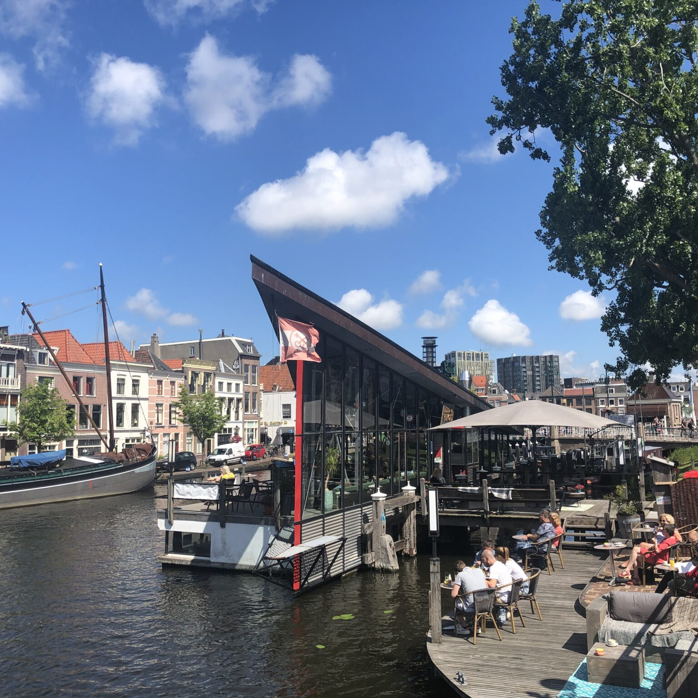
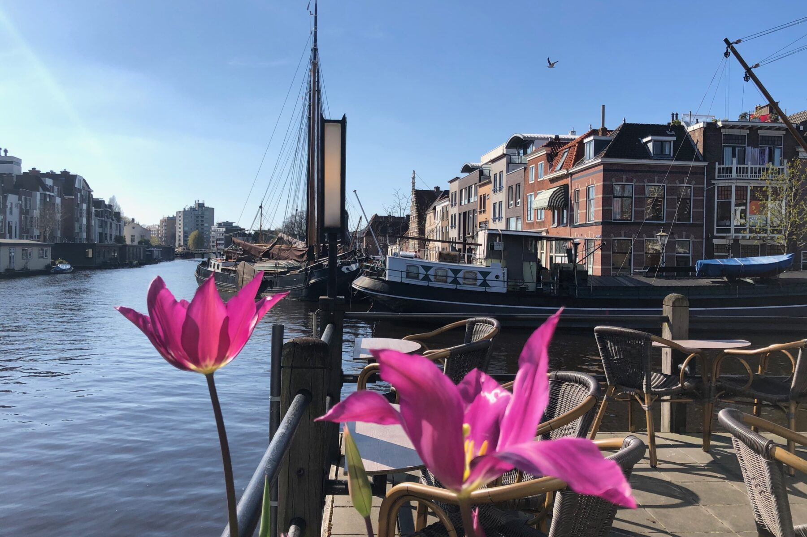
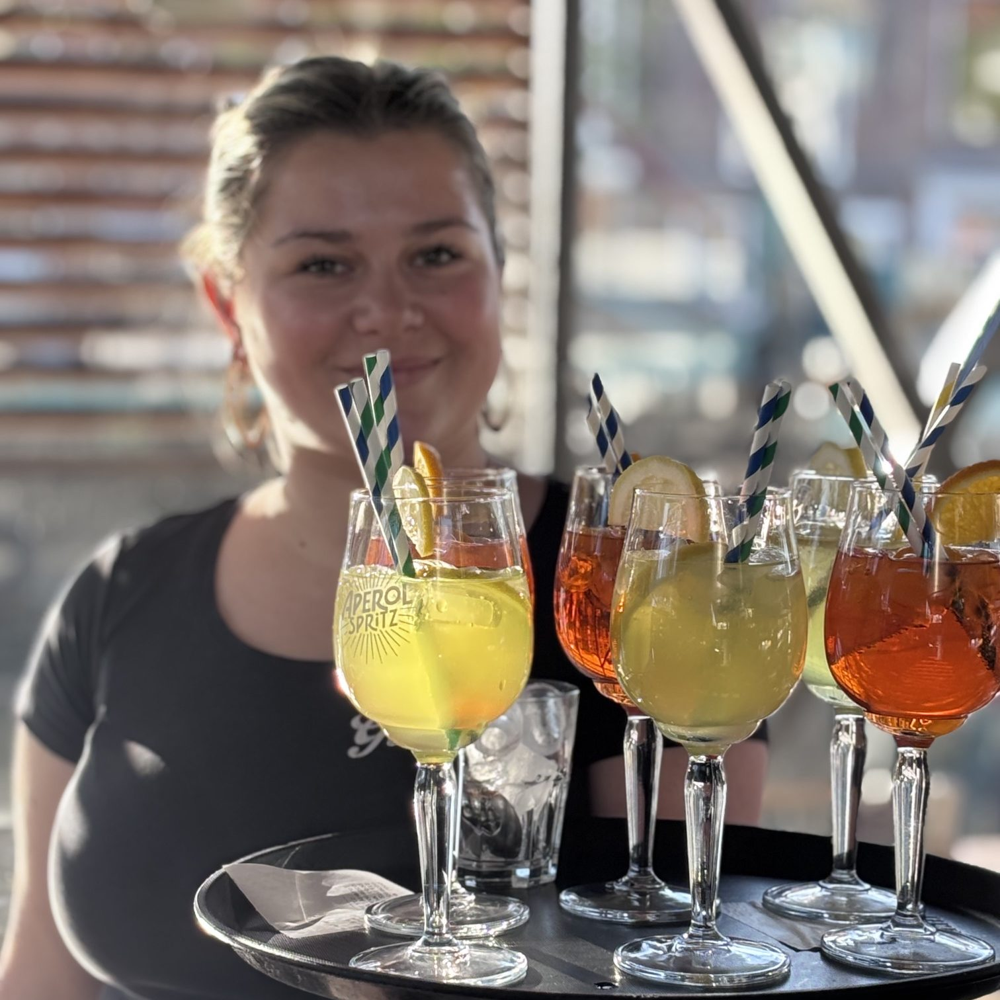
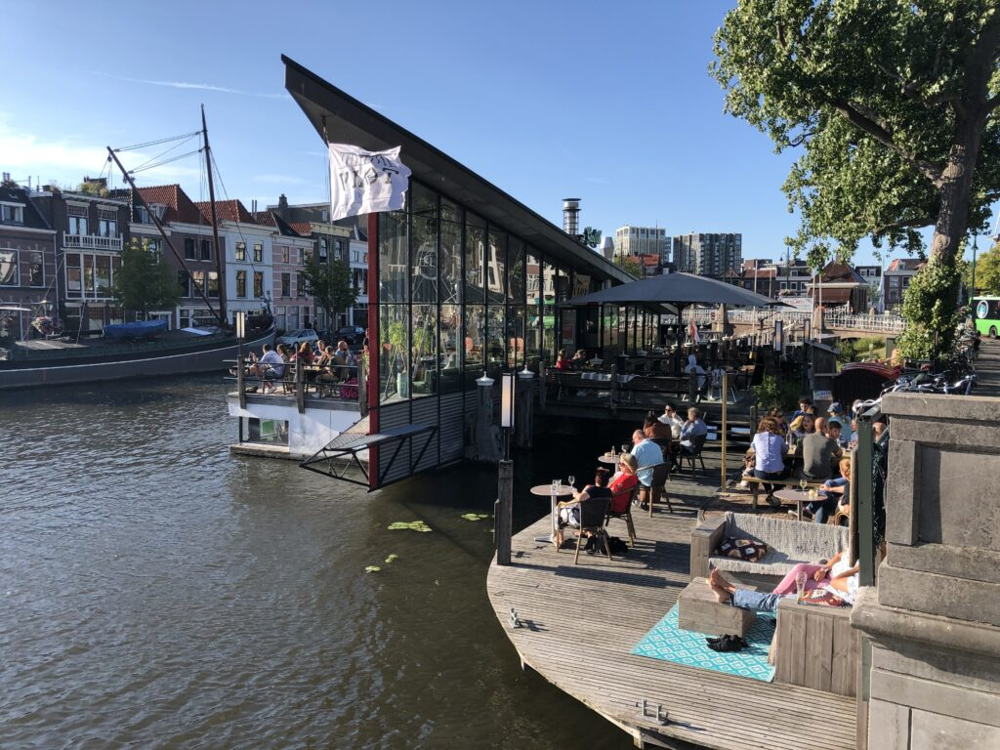
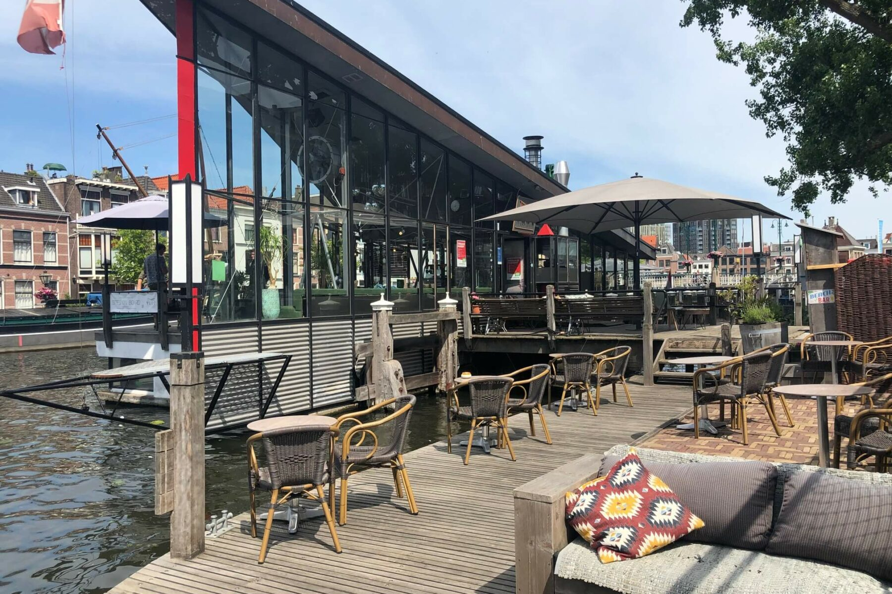

Vlot Grand Café
Een huiskamergevoel op een schip, aan het Galgewater in Leiden. Ontbijten, lunchen, borrelen of dineren in een geheel glazen boot, omringd door terrassen.
Welkom aan boord
Het unieke en creatieve gebouw is geïnspireerd op de Steilsteven boot. Dit geheel glazen vaartuig, omringd door terrassen en aanlegsteigers, zorgt voor een wijds uitzicht over het Galgewater, Molen De Put en de grachten van Leiden.
Met een gemoedelijke sfeer streven we naar een huiskamergevoel op een schip. Even bijkletsen, ontbijten, lunchen, borrelen of dineren: het kan bij Vlot Grand Café. Tot snel! Groeten van het Vlot Team.


Een schip met een geschiedenis
De boot van Vlot Grand Café is handgemaakt door twee creatievelingen. Hij bestaat al ruim 30 jaar.
De metalen randen zijn bijvoorbeeld gemaakt van komkommerkassen.
De boot heeft een reis over het water gemaakt om de stad in te komen. Zonder compleet dak kwam hij net door de brug bij Molen De Put.


Werken bij Vlot
Leuk dat je interesse hebt om bij Vlot Grand Café te werken! Op dit moment zijn we op zoek naar leidinggevende collega's. Heb je horecaervaring en lijkt het je leuk om ons team aan te sturen? Stuur dan zeker je sollicitatie toe.
Mail je sollicitatie met cvVacature Leidinggevende Horeca
We zoeken een enthousiaste leidinggevende.
Wij vragen
- Horeca-ervaring
- Vriendelijk en verantwoordelijk, gastgericht
- Bereid de kennis van de keuken te leren
- Sociale hygiëne diploma, of de wens dit te halen
- 4 tot 5 dagen per week (parttime mogelijk)
Wij bieden
- Een uitdagende baan, marktconform salaris en goede secundaire voorwaarden
- Fooi verdeeld naar uren
- Persoonlijke ontwikkeling en zelfstandigheid
- Werktijden tussen 08.45 en 00.00 uur
Reserveren & contact
Wilt u graag reserveren voor een lunch, borrel of diner? Bel naar Vlot Grand Café of stuur een e-mail. Van maandag tot en met vrijdag kunt u reserveren; op zaterdag en zondag niet, dan kunt u gerust binnenlopen.
Heeft u uitgebreidere vragen of wilt u met een groep langskomen, mail dan naar info@vlotleiden.nl.
- Adres
- Prinsessekade 5L, 2312 DA Leiden
- Telefoon
- 06 42 24 22 60
- info@vlotleiden.nl
- Openingstijden
- Zie onze actuele openingstijden: bel of mail ons, dan weet u het zeker.
- @vlotleiden
- Ligging
- Dichtbij station Leiden Centraal, de winkelstraten, de Leidse musea en de rondvaart door de grachten. Met de auto: navigeer naar Parkeergarage Morspoort of P+R Transferium Haagweg.